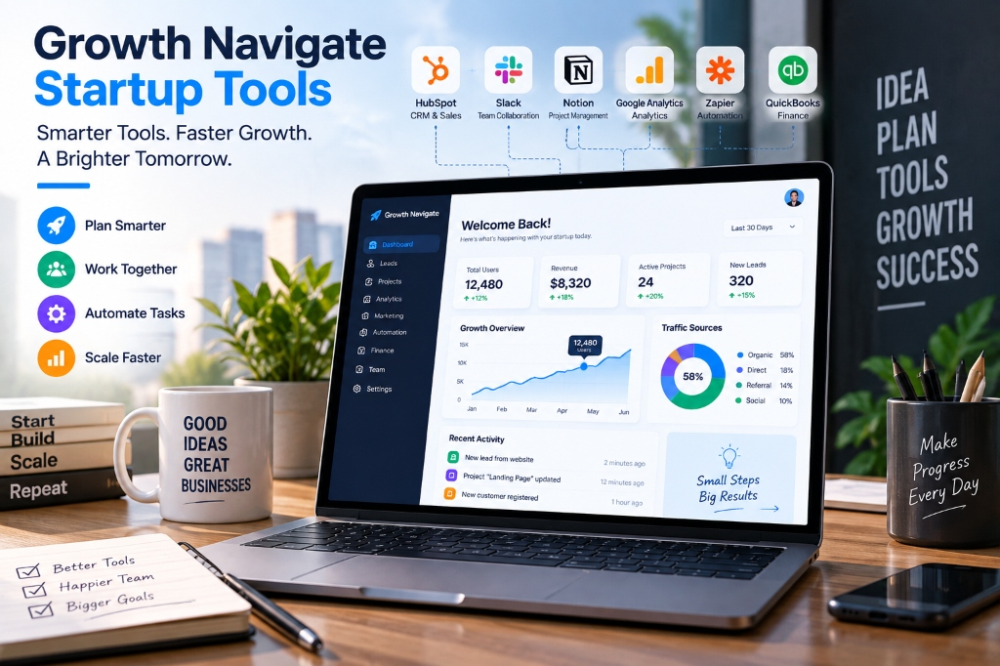

Starting a business is exciting, but growing one is a completely different challenge. As a startup begins gaining customers, managing projects, tracking leads, handling finances, and analyzing performance can quickly become overwhelming. This is where Growth Navigate Startup Tools can make a real difference.
The right startup tools help small teams organize their work, automate repetitive tasks, understand their customers, and make better business decisions. Instead of relying on spreadsheets, scattered emails, and manual processes, founders can build a connected technology stack that supports growth.
However, the goal is not to use dozens of software platforms. A successful startup needs the right tools for the right problems at the right stage.
What Are Growth Navigate Startup Tools?
Growth Navigate Startup Tools are digital platforms and software solutions designed to help startups manage daily operations while preparing for future growth. These tools can cover everything from customer relationship management and marketing to project management, analytics, automation, and accounting.
For example, a startup might use a CRM to manage potential customers, a project management platform to organize tasks, an analytics tool to understand website visitors, and an automation platform to connect different applications.
The important part is how these tools work together.
A collection of unrelated software can create more problems than it solves. A connected startup tech stack, on the other hand, can reduce manual work and give founders a clearer picture of what is happening inside the business.
Why Startups Need the Right Tools
Startups usually operate with limited budgets and small teams. One person may handle responsibilities that would normally belong to several departments in a larger company.
Technology can help close that gap. The right tools can help startups:
- Organize customer information
- Track sales opportunities
- Automate repetitive tasks
- Manage projects and deadlines
- Analyze customer behavior
- Monitor business performance
- Improve team communication
- Track revenue and expenses
- Reduce unnecessary manual work
For example, instead of checking several spreadsheets to understand sales performance, a CRM can provide a centralized view of leads, conversations, deals, and customer activity.
This allows founders and teams to spend less time managing information and more time acting on it.
Essential Categories of Startup Growth Tools
Before choosing individual software products, startups should understand the main categories they need. Every business is different, but several tool categories are useful across industries.
1. CRM and Sales Tools
Customer relationship management software helps startups organize leads, prospects, customers, and sales activities in one place.
A CRM can record customer conversations, track deals, schedule follow-ups, and show where prospects are in the sales pipeline.
Popular options include HubSpot and Salesforce. The best choice depends on the company's size, budget, sales process, and future requirements.
For a small startup, a simple CRM may be enough. As the sales operation becomes more complicated, advanced features and integrations may become more important.
2. Project Management and Collaboration Tools
As a startup grows, keeping track of tasks through chat messages and spreadsheets becomes difficult.
Project management platforms help teams assign tasks, establish deadlines, monitor progress, and organize projects. Tools such as Notion, Asana, ClickUp, and Airtable can support different working styles.
A startup does not necessarily need multiple project management platforms. Choosing one central workspace can make responsibilities clearer and reduce confusion.
3. Marketing and Customer Acquisition Tools
Growth depends heavily on attracting the right customers. Marketing tools help startups manage email campaigns, content marketing, social media activities, lead generation, and customer communication.
Marketing automation can also save time. Instead of manually sending the same follow-up messages to every prospect, businesses can create automated workflows based on customer actions.
The key is to automate repetitive processes while keeping communication useful and personal.
4. Analytics and Business Intelligence
Data can help startups understand what is working and what needs improvement. Analytics tools can reveal where website visitors come from, which pages they view, how long they stay, and whether they complete important actions.
Google Analytics 4 is commonly used for website and digital analytics, while product-focused platforms such as Amplitude can provide deeper insights into user behavior.
However, collecting data is only the beginning. The real value comes from turning that information into decisions.
Automation: A Major Part of Startup Growth
Automation is one of the most valuable parts of a modern startup tech stack. Many startup tasks are repetitive. For example, a new customer may submit a form, receive an email, get added to a CRM, and create a task for the sales team.
Without automation, employees may need to perform each step manually. Tools such as Zapier can connect different applications and automate these workflows.
A simple workflow like this can save time and reduce the risk of human error.
However, startups should avoid automating everything too early. If a process is still changing every week, building complicated automation around it may create unnecessary maintenance.

Finance and Accounting Tools
Growth is not only about acquiring customers. A startup also needs to understand its financial position. Financial tools can help businesses monitor:
- Revenue
- Expenses
- Cash flow
- Burn rate
- Runway
- Profitability
These numbers become particularly important when a company starts hiring employees, spending more on marketing, or considering external investment.
A startup that understands its finances can make decisions based on actual numbers rather than assumptions.
How to Choose Growth Navigate Startup Tools
Choosing software should start with a business problem rather than a product name. Instead of asking:
Ask: “What specific bottleneck or problem is slowing my business down right now?”
For example, if leads are being forgotten, a CRM may solve the problem. If employees keep missing deadlines, project management software could help. If marketing decisions are based on assumptions, analytics may be the missing piece.
A practical selection process is:
- Identify the biggest operational problem.
- Find the software category that addresses it.
- Compare a few suitable platforms.
- Start with a free or affordable plan when possible.
- Test the tool with your actual workflow.
- Measure whether it saves time or improves results.
- Upgrade only when the business genuinely needs additional features.
This approach keeps the technology stack manageable.
Growth Navigate Startup Tools by Business Stage
The tools a startup needs at the beginning are different from the tools it may require after significant growth.
Early Stage
At the idea or early validation stage, keep things simple. A workspace for planning, communication software, and basic analytics may be enough.
The main goal should be understanding customers and validating the business idea rather than building a complicated technology infrastructure.
Traction Stage
Once customers begin arriving consistently, CRM and analytics become more important. The startup needs to know where leads are coming from, which customers are converting, and which activities are producing measurable results.
Scaling Stage
When revenue and operations become more predictable, startups can introduce advanced automation, marketing workflows, product analytics, and more sophisticated financial systems.
At this point, integrations become increasingly valuable because different departments generate large amounts of information.
Common Startup Tool Mistakes to Avoid
Having too many tools does not automatically mean having a better business.
One common mistake is subscribing to multiple platforms that perform nearly identical functions. This increases costs and can make workflows confusing.
Another problem is choosing software without checking integrations. If two important systems cannot share data, employees may end up copying information manually.
Startups should also review their software subscriptions regularly. A tool that was useful six months ago may no longer be necessary. The best technology stack should evolve with the business.
How to Build a Scalable Startup Tech Stack
A scalable stack does not need to be complicated. Start with the core functions of your business. Identify the tools required for communication, customer management, project organization, analytics, automation, and finance.
Then connect the systems wherever practical. For example, customer information can move from a website form into a CRM, while a CRM event can trigger an internal notification or follow-up task.
The objective is to create a system where information moves efficiently instead of being repeatedly entered by employees.
Most importantly, measure the value of every major tool. If software saves significant time, improves customer management, reduces errors, or provides useful business insights, it may deserve a place in the stack. If nobody uses it, it may be time to remove it.
Final Thoughts
Growth Navigate Startup Tools can give small businesses the infrastructure they need to operate more efficiently and prepare for expansion. From CRM and analytics to project management, automation, and finance, the right software can remove operational friction and help teams focus on growth.
But successful startups do not win by collecting the largest number of applications. They build a simple, connected, and flexible technology stack around real business needs.
Start small, solve the most important problems first, measure the results, and add new tools only when they provide clear value. As your startup grows, your technology stack can grow with it.
Frequently Asked Questions
What are Growth Navigate Startup Tools? ▼
Growth Navigate Startup Tools are software platforms that help startups manage operations, customers, marketing, analytics, projects, automation, and finances while supporting business growth.
Which tools should a new startup use first? ▼
A new startup should begin with tools that solve immediate problems. Depending on the business, this may include a workspace, communication platform, CRM, analytics solution, and basic financial software.
Are free startup tools useful? ▼
Yes. Free plans can be useful for early-stage startups that are testing workflows and validating their business model. Paid plans can be introduced when advanced features or higher usage limits become necessary.
How many startup tools does a business need? ▼
There is no fixed number. A startup should use enough tools to manage its essential operations without creating unnecessary complexity. A smaller, well-connected stack is often easier to manage than dozens of overlapping applications.
When should a startup invest in automation? ▼
Automation becomes valuable when a process is repetitive, predictable, and consumes meaningful time. Startups should first understand and stabilize a workflow before building complex automation around it.